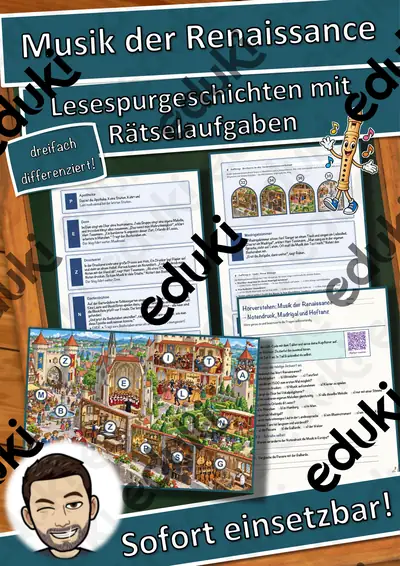
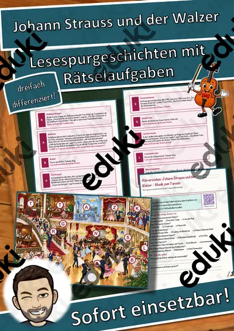
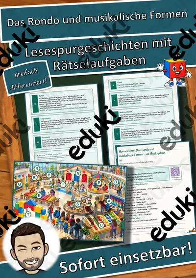
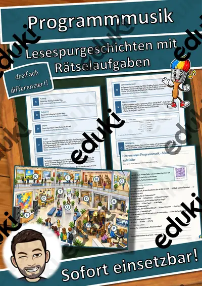
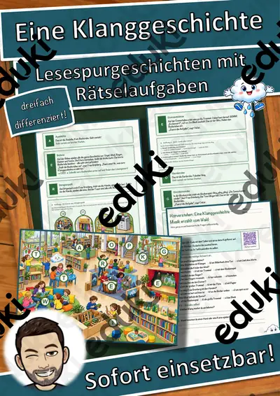

Materialpaket Lesespurgeschichten Musik Klasse 8: 22 Lesespuren mit Rätselaufgaben, dreifach differenziert

Materialpaket Lesespurgeschichten Musik Klasse 7: 8 Lesespuren mit Rätselaufgaben, dreifach differenziert

Materialpaket Lesespurgeschichten Musik Klasse 6: 8 Lesespuren mit Rätselaufgaben, dreifach differenziert

Materialpaket Lesespurgeschichten Musik Klasse 3: 9 Lesespuren mit Rätselaufgaben, dreifach differenziert

Materialpaket Lesespurgeschichten Musik Klasse 1: 9 Lesespuren mit Rätselaufgaben, dreifach differenziert

Die Holzbläser – Flöte, Klarinette, Oboe und Fagott – Lesespurgeschichte mit Rätselaufgaben (Klasse 5)

Glocken – vom Guss bis zum Geläut – Lesespurgeschichte mit Rätselaufgaben (Klasse 5)

Das Weihnachtsoratorium – Chor, Arie und Rezitativ – Lesespurgeschichte mit Rätselaufgaben (Klasse 7)

Die Klaviatur – Stammtöne, Halbtöne und Vorzeichen – Lesespurgeschichte mit Rätselaufgaben (Klasse 6)

Improvisation – Musik aus dem Moment – Lesespurgeschichte mit Rätselaufgaben (Klasse 8)

Musik der Renaissance – Notendruck, Madrigal und Hoftanz – Lesespurgeschichte mit Rätselaufgaben (Klasse 7)

Peter und der Wolf – jede Figur hat ihr Instrument – Lesespurgeschichte mit Rätselaufgaben (Klasse 3)

Johann Strauss und der Walzer – Musik zum Tanzen – Lesespurgeschichte mit Rätselaufgaben (Klasse 7)

Die Band – vom Proberaum auf die Bühne – Lesespurgeschichte mit Rätselaufgaben (Klasse 7)

Ohren auf! – Laute und leise Orte – Lesespurgeschichte mit Rätselaufgaben (Klasse 1)

Die Blaskapelle – Musik im Freien – Lesespurgeschichte mit Rätselaufgaben (Klasse 3)

Neue Musik – Klangexperimente im 20. Jahrhundert – Lesespurgeschichte mit Rätselaufgaben (Klasse 10)

Das Rondo und musikalische Formen – wie Musik gebaut ist – Lesespurgeschichte mit Rätselaufgaben (Klasse 6)

Blues und Gospel – Stimmen der Hoffnung – Lesespurgeschichte mit Rätselaufgaben (Klasse 9)

Programmmusik – Musik malt Bilder – Lesespurgeschichte mit Rätselaufgaben (Klasse 6)

Popmusik – wie ein Hit entsteht – Lesespurgeschichte mit Rätselaufgaben (Klasse 8)

Dirigieren – Musik mit den Händen führen – Lesespurgeschichte mit Rätselaufgaben (Klasse 6)

Instrumente selbst bauen – Musik aus Dose und Karton – Lesespurgeschichte mit Rätselaufgaben (Klasse 1)

Musik und Gefühle – wie Musik uns bewegt – Lesespurgeschichte mit Rätselaufgaben (Klasse 3)

Elektronische Musik – vom Theremin bis zum Laptop – Lesespurgeschichte mit Rätselaufgaben (Klasse 10)

Die Romantik – Musik der Gefühle – Lesespurgeschichte mit Rätselaufgaben (Klasse 9)

Die Wiener Klassik – Haydn, Mozart, Beethoven – Lesespurgeschichte mit Rätselaufgaben (Klasse 8)

Musik im Mittelalter – Mönche, Minnesänger und Spielleute – Lesespurgeschichte mit Rätselaufgaben (Klasse 7)

Eine Klanggeschichte – Musik erzählt vom Wald – Lesespurgeschichte mit Rätselaufgaben (Klasse 1)

Hip-Hop – Rap, DJ und Beat – Lesespurgeschichte mit Rätselaufgaben (Klasse 9)
Keine Materialien gefunden – versuch einen anderen Suchbegriff oder Filter.
Musik hören, lesen und verstehen
Musikunterricht lebt vom Hören, doch auch der beste Höreindruck braucht Sprache, um zu bleiben. Die Materialien dieser Seite verbinden deshalb beides: In Lesespuren erfährt die Klasse etwas über Instrumente, Komponisten oder Stilrichtungen und löst an den Stationen kleine Hör- und Denkaufgaben. Für die Grundschule kommen Mitmachformate dazu, die ohne Notenkenntnis auskommen.
Klasse 1 und 2: Klänge entdecken
Die ersten Schuljahre beginnen mit „Ohren auf!“, „Laut und leise, hoch und tief“, „Instrumente selbst bauen“ und „Orff-Instrumente“. Die „Hörwerkstatt Geräusche“ gibt es in mehreren Fassungen, darunter „Geräuschemacher im Geisterhaus“, in denen Kinder Alltagsgeräusche zuordnen und mit Körperklängen nachbauen.
Klasse 3 bis 7: Notenschrift, Komponisten, Formen
Mit „Peter und der Wolf“, „Die Blaskapelle“, „Musik und Gefühle“ und „Notenschrift“ beginnt der Übergang zum systematischen Lernen. „Wolfgang Amadeus Mozart“ und die „Persönlichkeiten-Werkstatt: Mozart“ bieten Biografisches. Klasse 6 ergänzt „Die Klaviatur“, „Die Tonleiter“, „Das Rondo und musikalische Formen“ und „Dirigieren“, Klasse 7 „Das Weihnachtsoratorium“ und „Johann Strauss und der Walzer“.
Klasse 8 bis 10: Epochen und Genres
Besonders dicht ist das Angebot in Klasse 8 mit „Die Wiener Klassik“, „Popmusik“, „Improvisation“ und „Der Konzertsaal“. Klasse 9 widmet sich „Die Romantik“, „Blues und Gospel“, „Hip-Hop“ und „Filmmusik“, Klasse 10 „Neue Musik“ und „Elektronische Musik“.
Was die Klasse mitbringen muss
Kaum etwas: Die Lesespuren erklären ihre Begriffe selbst. Notenkenntnisse werden nur dort vorausgesetzt, wo das Thema es verlangt, zum Beispiel bei der Tonleiter. Wer wenig Zeit hat, nutzt einzelne Stationen als Hörimpuls.
Hörwerkstatt und Zusatzmaterial
Die Hörwerkstatt ist so angelegt, dass sie im Stationenbetrieb funktioniert: Mehrere Gruppen arbeiten gleichzeitig an verschiedenen Geräuschen, und die Ergebnisse werden anschließend gemeinsam verglichen. Das schult genaues Zuhören und den Wortschatz für Klang, Lautstärke und Tonhöhe.
Häufige Fragen
Brauche ich ein Instrument oder Abspielgerät?
Für die Hörwerkstatt ist ein Wiedergabegerät hilfreich. Die Lesespuren selbst funktionieren auf Papier.
Gibt es Material zu Pop und Rap?
Ja, in den höheren Klassen, zum Beispiel „Popmusik“, „Hip-Hop“ und „Rock ’n’ Roll und Rockmusik“.
Eignen sich die Materialien auch für fachfremd erteilten Unterricht?
Ja, weil Texte und Aufgaben die nötigen Informationen enthalten und die Lösungen beiliegen.
Gibt es Material zu Weihnachtsmusik?
Ja, im Jahreslauf etwa „Das Weihnachtsoratorium“ für Klasse 7.